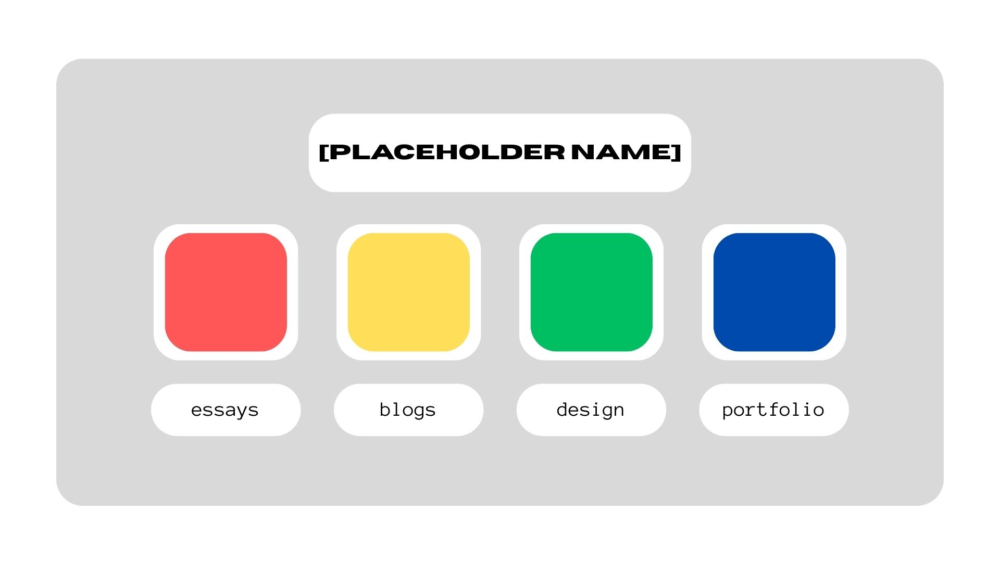

Implementation
Goal Alignment:
My users would hopefully be potential collaborators or employers. What those users would be able to do is view the art that I create, and be able to contact me regarding that art if they so please. The content on the site would be artworks and writing pieces that I have completed so far.
Information structure
I have created a mind man and a flow diagram to display how the different pages of my website are linked and how they flow together.
User Flow
Users will have to press a button (with the page's name on it) to access each page. They will never find themself on a page by accident. Clicking on a page's corresponding button would take it to the page itself. Each sepaate component would have its own page, for example, clicking on blogs would take users to the blog homepage (which is it's own page). From there, users would click on the blog that they want to read, which would take them to that specific blog's page.
Interface elements
Each page should have things to interact with, so that its not just read or viewing. An idea that I've been having is to create a character that hides somewhere on each page, and users would find them by exploring the page. Once they have found them, they can click on them and then there would be a small celebratory segment (like confetti showering the screen or something like that) to denote that they've found them. It would be like Where's Wally or Find Mii from Wii Play.
Design - Style guides and wire frames
For this section, I have created visual mockups based on my wireframes to display what the page would look like. This includes the colour palette, fonts used and button designs. Each section has it's own colour scheme, with secondary colours that are consistent throughout the site.
Homepage

The central hub of the entire site.
Blog Homepage

The space to access blogs.
Individual Blog Page

What each blog page will look like.
Essay Homepage

The space to access essays.
Individual Essay Page

What each essay page will look like.
Design Homepage

The space to access the Design page and IxD Process page.
Individual Design Page

What each design page will look like.
Profile and Porfolio Homepage

The space to access my profile and portfolio pages.
Individual Profile/Portfolio Page

What each page will look like.
Inspirational Site:
Nintendo eShopLinks to an external site.
What I like:
Navigation is smooth, everything you need to access is always close by.
Strong branding comes through with the colour palette.
The way updates (like new games or sales) are displayed makes it feel like the site always has something new to offer.
What I don't like:
It often feels a bit too busy.
The text is a bit too small.
If there are a lot of updates, it can feel like information overload.
Mark as unreadMark as unread